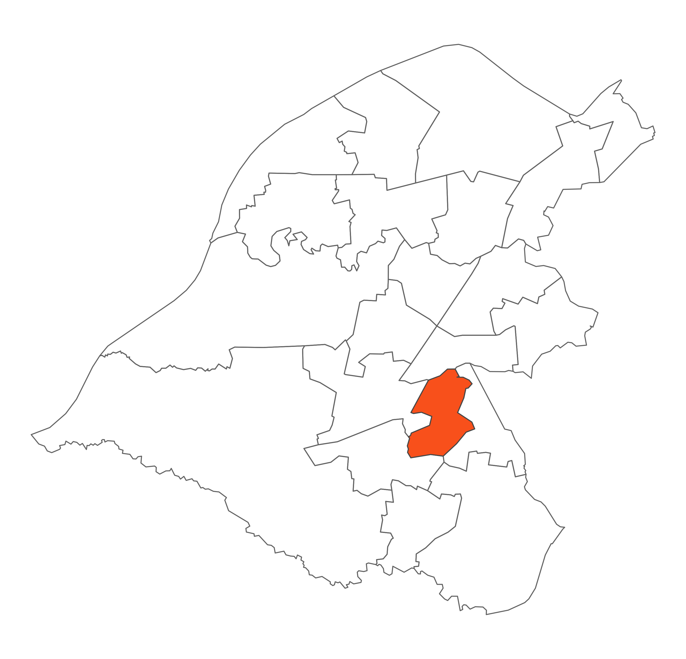

 Timperley is primarily a residential area in the south of the Borough. It is bounded to the west by the Bridgewater Canal and to the north by Baguley Brook. To the east are residential areas and to the south the main A560 road and Altrincham Golf Course. On the ward border is the busy Timperley district shopping centre. The south of the ward is more affluent than the north of the ward. The ward ranks within the top 500 of the least deprived wards in the country.